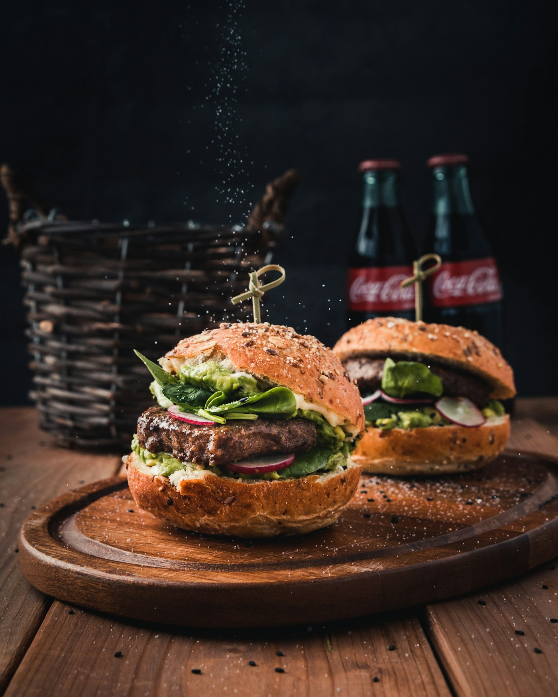
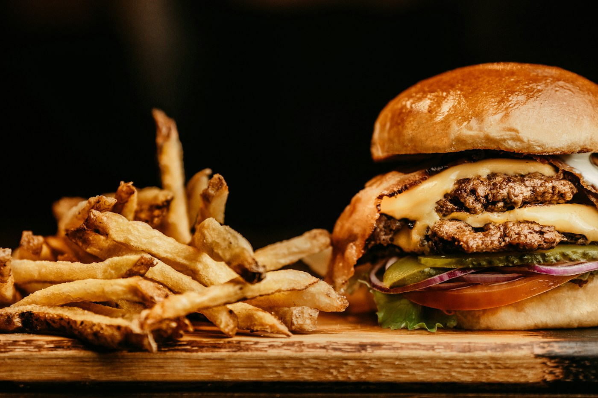
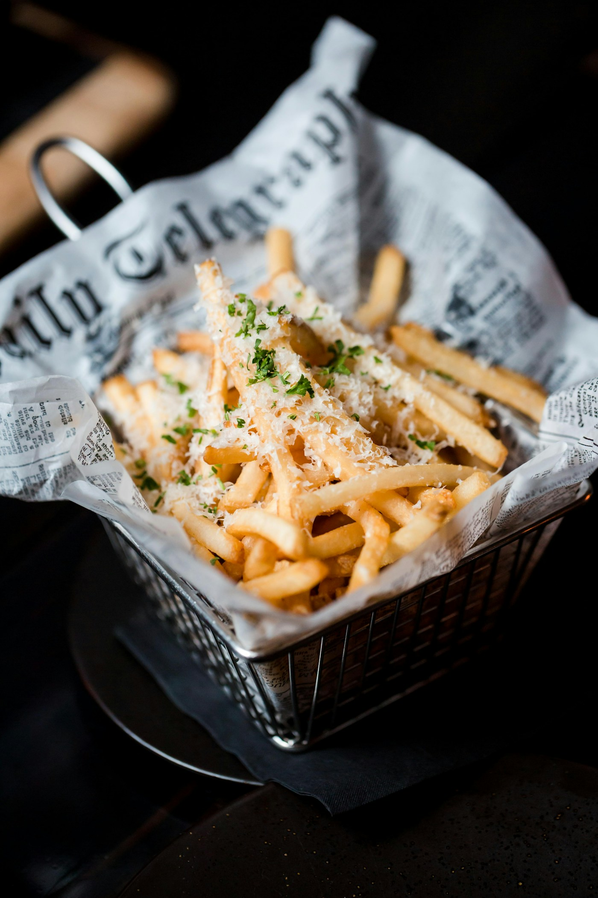

La Clásica
Carne, cheddar, lechuga, tomate y salsa de la casa.

Cuatro favoritos. Elegí el tuyo y sumalo al pedido de prueba.

Carne, cheddar, lechuga, tomate y salsa de la casa.

Doble carne, doble cheddar, cebolla y pepinillos.

Papas doradas con sal y salsa de ajo aparte.
Medallón vegetal, hojas, tomate y salsa de hierbas.
El sonido de la plancha. El queso en su punto. El primer mordisco. Hay cosas que se disfrutan mejor con las manos.
Volver a la cartaProbá sumar y quitar productos. Esta demo no envía pedidos.
Total $0